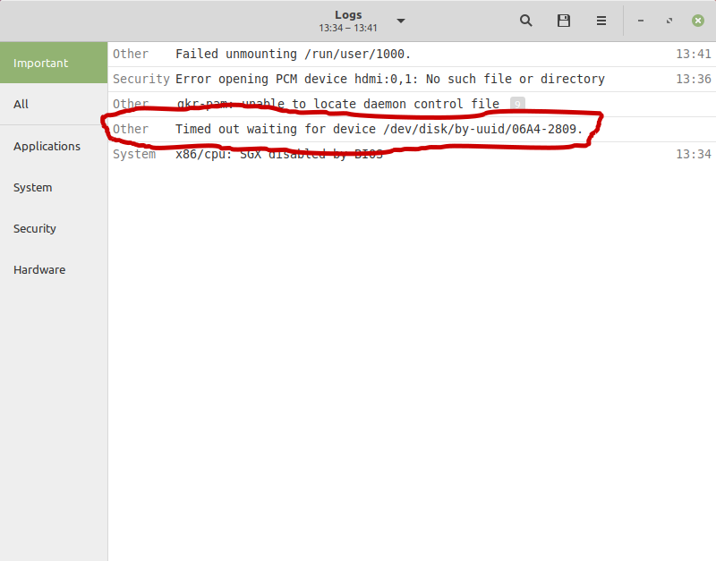
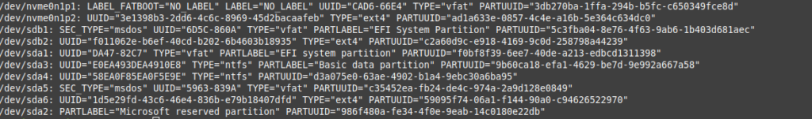
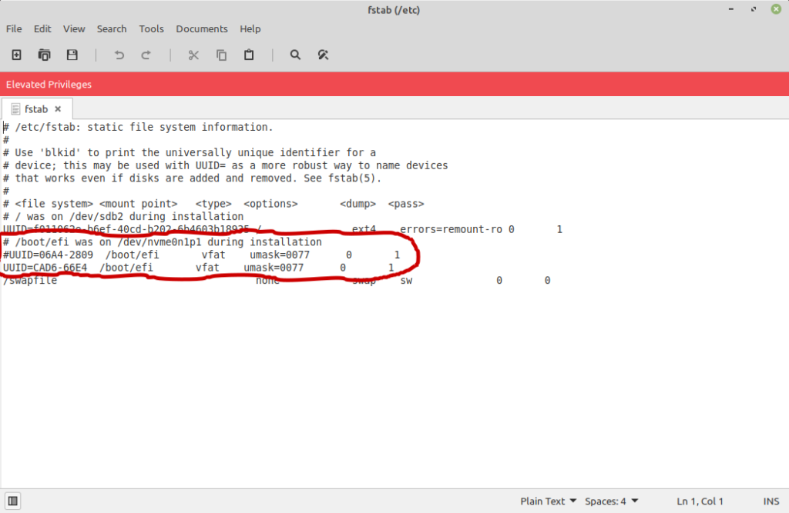

The joys of dealing with UEFI...
Okay, I actually don't know enough about either UEFI or the old BIOS to really have an opinion on which is better, but I do have my opinions on which was easier to deal with. UEFI isn't actually that big of a deal, but having the extra partition for booting can be annoying to put is simply.
I'm writing this post more for myself in case I have this issue again, but for the two people out there who might also end up with this issue, this post could be for you.
I generally wipe and reset my computers 1-2 times a year just to keep them clean and running nicely. Now that the semester (and the year) is just about over, I've been in the process of doing that, and I just about have it done. I re-configured my desktop to boot Manjaro, Linux Mint, Kubuntu, and Windows 10 (yes I joined the dark side). After installing Mint, I ran into a weird issue where it was taking upwards of 5 minutes on an SSD to boot- something that usually takes under a minute. After picking through the logs and doing some google searches, I figured out the issue.
If you are booting multiple systems and one is taking an extremely long time to boot, open the log application (most distros have one), and see if you see anything like this:

This means that the kernel is unable to find a partition and/or disk to mount. Generally, this would get messed up when you are installing the other operating systems you are booting. The reason why it stalls the rest of the boot sequence is because its searching all the disks, which can take some time.
If that is the case, run this command:
sudo blkid
You should see an output like this:

Yes I have a lot going on. This will vary by how you set up your system, but you will need the UUID of whichever partition everything else boots from. In my case, the main boot partition is on "/dev/nvme0n1p1".
Now, run this command (I know, I know, you shouldn't run GUIs as root like this. I was too lazy to figure out how to copy and paste in Nano):
sudo xed /etc/fstab
For safety, I would comment out what was there originally, copy-and-paste, and then change the UUID to the proper one:

That's it! You should be able to reboot, and your system should boot up rapidly! In my case, it dropped to a solid 40 seconds.
Thanks for reading!